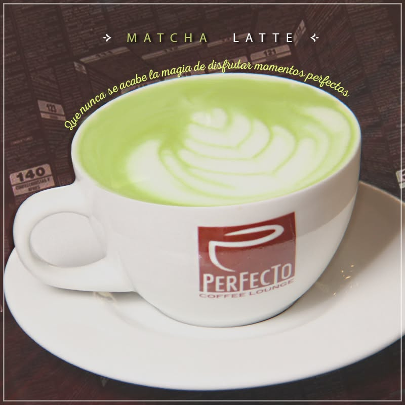

Bienvenidos
Somos la primera cafetería y tostaduría de especialidad de Oruro, reconocida entre las Top 9 de Bolivia.

Nuestro menú
Precios en bolivianos (Bs).
Cafés de especialidad
Calientes
Fríos
Leche deslactosada: + 4 Bs
Filtrados de especialidad
Bebidas sin café
Batidos nutritivos y jugos de la casa
Especiales sin café
Pastelería
Brunch
Desayunos para disfrutar a cualquier hora.
Platos de especialidad de la casa
Lomo al Grill 65 Bs
Sabroso corte de lomo de res de 250 gramos, con marinado de especias y mantequilla, asado al grill. Acompañado de yuca frita y ensalada de palta, brócoli, tomate y maíz.
Steak de res "Perfecto" 65 Bs
Lomo de res asado en una cremosa salsa de carne, con tostada de pan y una fresca ensalada de maíz, queso y tomate.
Shakshuka 42 Bs
Servido en sartén de hierro: huevos escalfados en salsa de tomates, pimientos y cebolla.
Hamburguesas de la casa
Recetas únicas con 120 gramos de carne.
Clásica americana 47 Bs
Carne de res, queso cheddar, cebolla caramelizada, lechuga, tomate, tocino, pepinillos y papas fritas.
De pollo crocante 45 Bs
Pollo crocante, pepinillos, queso cheddar, tocino y papas fritas.
Diablo (picante ligero) 45 Bs
Carne especiada con un toque picoso, salsa de especias, queso cheddar, tocino y lechuga.
Champ (champiñones) 45 Bs
Carne de res en pan tostado, con compota de champiñones, vegetales rehogados, lechuga y salsa bacon.
Whisky (marinada) 45 Bs
Carne de res marinada en whisky, con queso cheddar, morrón, lechuga y vegetales flambeados.
Sándwiches
Pollo a la plancha 43 Bs
Pollo a la plancha, cebolla caramelizada y tocino crujiente en pan panini, con nuestra salsa ahumada secreta.
Lomito de res a la plancha 48 Bs
Lomito en pan panini de la casa, con queso americano y cebolla caramelizada.
Charque "Perfecto" 48 Bs
Charque frito, cebolla caramelizada y palta, con salsa de ajo, en pan de la casa.
Vegetariano 25 Bs
Queso criollo, palta, palmito, lechuga, tomate, germen de alfalfa y mostaza, en pan integral.
Croque Monsieur 23 Bs
Jamón y mozzarella, con salsa bechamel y queso gratinado.
Croque Madame 25 Bs
Jamón, mozzarella, huevo, salsa bechamel y queso gratinado.